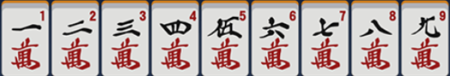
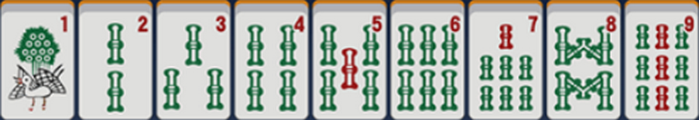
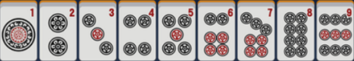
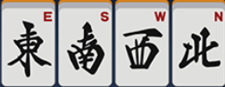
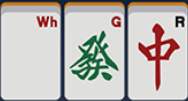
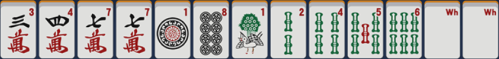
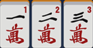
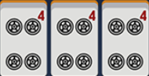
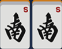
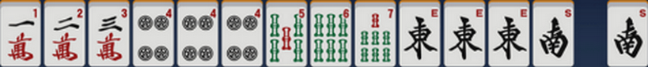

Les tuiles
Un jeu de riichi mahjong est composé de trente-quatre tuiles différentes chacunes en quatre exemplaires. Le but au mahjong est de former une main de quatorze tuiles d'une forme valide.
Il existe quatre familles de tuiles différentes. Les trois familles de base qui sont numérotées de un à neuf.

La famille des caractères (man)

La famille des bambous (sou)

La famille des pièces (pin)
A ces tuiles viennent s'ajouter la quatrième famille appellée famille des honneurs. Elle est composé de deux sous familles, les vents et les dragons.


La main
Une main de départ au mahjong est donc composée de treize tuiles, puis à chaque tour d'un joueur, ce dernier va piocher une tuile regarder si il a gagné et si ce n'est pas le cas, défausser une tuile et passer au tour du joueur suivant.
Le jeu s'effectue dans le sens anti-horaire (ou trigonométrique).

Il existe trois types de groupement de tuiles au mahjong pour réaliser des mains valides :
La suite, composée de trois tuiles consécutives de la même famille.

Le brelan, composé de trois tuiles identiques de la même famille.

La paire, composée de deux tuiles identiques de la même famille.

Pour qu'une main puisse être déclarée comme gagnante, elle doit respecter certaines conditions. Etre composée de quatre groupes de trois (brelan ou suite) et d'une paire.

Principes fondamentaux
Le Tenpai
Une main qui ne nécessite plus qu'une seule tuile pour déclarer une victoire est dite "en attente" (ou Tenpai en japonais).
Déclarer un victoire
- Tsumo : Lorsque la main est en attente et que l'on pioche la tuile qui nous fais gagner, on peut déclarer une victoire par pioche grâce à l'appel Tsumo.
- Ron : Lorsque la main est en attente et qu'un adversaire défausse la tuile qui nous fais gagner, on peut déclarer une victoire par vol de tuile grace à l'appel Ron.
Lorsque la pioche est vide et qu'aucun joueur n'a déclaré de victoire, on regarde les joueurs Tenpai, qui se partagent 3000 points, donnés par les joueurs qui ne sont pas en Tenpai (dit no-Ten).
Yaku, Han et Fu
Un Yaku est un 'point' qui est nécessaire pour avoir une main valide. Une main ne possèdant pas de yaku, même avec une forme valide ne peut pas déclarer de victoire (Voir la liste des mains).
Une main donnant un Yaku peut valoir plus ou moins de points selon sa difficulté. Ces points sont comptabilisés par un nombre de Han (gros points) et un nombre de Fu (mini-points). Plus la main sera difficile plus elle apportera de points et en fera perdre aux adversaires (Voir la liste des mains).
Main ouverte/fermée
Une main est dites ouverte lorsque un ou plusieurs appels sont effectués pour compléter sa main. Déclarer une victoire par ron n'ouvre pas la main.
Les appels
Les appels sont des actions durant la partie, permettant de voler des tuiles à ses adversaires sous certaines conditions. L'appel pour voler une tuile doit être effectué au moment où la tuile en question est défaussé. Le groupe complété ainsi que la tuile volée sont posée face révélée sur le côté droit de la table.
- Pon : Permet de compléter une paire dans la main en un brelan. Peut être effectué sur n'importe lequel des trois autres joueurs
- Chii : Permet de compléter une suite de deux tuiles en une suite complète de trois tuiles. Peut être effectué uniquement sur le joueur jouant avant la personne qui chii.
- Kan : Cas particulier. Permet de former un carré. Le carré est comptabilisé comme étant un brelan pour la forme de la main. Une tuile supplémentaire est piochée dans le mur mort. On peut former un kan de trois manières :
- Voler la quatrième tuile pour compléter un brelan de la main (Kan ouvert).
- Piocher la quatrième tuile après avoir appellé un pon (Kakan).
- Avoir les quatre tuiles dans la main (Kan fermé). Le kan fermé n'ouvre pas la main contrairement aux autres appels.
La Rivière
La rivière est le nom donné à l'endroit où les joueurs défaussent leur tuiles à chaque tour. Chaque joueur possède sa propre rivière devant lui. Par convention on fait une rivière en plusieurs lignes de six tuiles.
Le Richii
Lorque la main est fermée et en attente, le joueur peut décider d'annoncer riichi. Le riichi indique aux adversaires que la personne est en attente et qu'il ne modifiera plus sa main jusqu'à la fin de la manche. Le riichi est un yaku et vaut un han.
Le Furiten
Le Furiten est une règle de base, relativement complexe qui sous certaines conditions, empêche de pouvoir déclarer une victoire par ron. Permettant uniquement de déclarer une victoire en tsumo. Il en existe plusieurs sortes :
- Furiten par défausse : Être en attente sur au moins une des tuiles présentent dans notre rivière met en furiten. Les tuiles volés dans notre rivière sont toujours considérées dans notre rivière pour le furiten. Dans le cas d'attentes sur plusieurs tuiles (56 attend sur 4 ou 7) si n'importe laquelle des attentes sont dans la rivière, TOUTES les attentes sont furiten. Le furiten concerne la main et pas juste une défausse.
- Furtien temporaire : Ne pas appeller une tuile qui nous ferai gagner déclenche un furiten temporaire pour un tour. Le furiten temporaire s'arrête quand le joueur en furiten défausse une nouvelle tuile.
- Riichi Furiten : Ne pas appeller une tuile qui nous ferai gagner en étant en riichi, met en furiten de manière permanente pendant tout le reste de la manche.